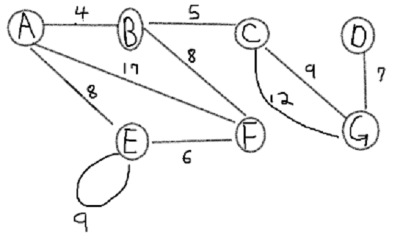
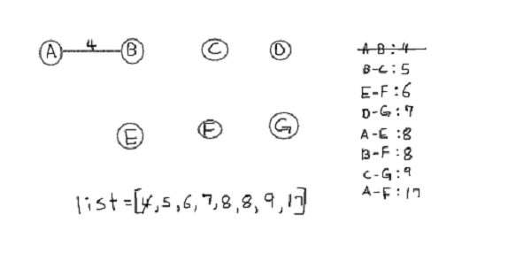
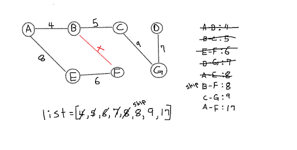

date posted: 2020-02-15
Just by the name Minimal Spanning Tree it self explanatory. We've already learned that tree is an acyclic undirected graph if you are unfamiliar with graph terminologies I recommend you to check out graph introduction.
Spanning Tree of a graph G is a tree that spans G => include every vertex in G and is a subgraph of G. Spanning tree of a graph must include all vertices but no restriction on edges, just need edges to help you reach all vertices.
Minimal Spanning Tree is a spanning tree that have lowest cost => sum of edges' weights are the lowest among other spanning trees.
There are multiple applications of MST in network design such as telephone line, electrical cables, TV cables, computer and more.
Say that there are five cities that your company provides electricity to, from your electrical power plant there are
multiple cables that are connected to each five cities. Now company need to maximize profit therefore will
try to find electricity cables that reach all five cities with lowest costs. Another use case can be uber-eats where
you want to deliver many houses(verticies) in shortes amount of time which can be done by taking shortest paths
from one house to another.
We know what Minimal Spanning Trees are but how to efficiently find them?
Two famous algorithm for finding Minimal Spanning Tree are Kruskal and Prim's algorithm which follow greedy approach => at each step only think about achieving local minimum.
First, Kruskal's algorithm figures out all information about its edges weight and use them to connect
vertices without breaking property of MST.
Kruskal's algorithm follows three steps:
Let's do an example using disjoint method.

1. vertex E has edge that creates a loop and C-G has parallel edges so delete loop and higher weight edge.
2. Sort all edges in increasing order.
Now remove all edges, consider each vertex as a set and perform step 3 using disjoint method.
Note that if two edges have same weight it doesn't matter which one you sort first. We see edge A-B is the lowest and {A} ∩ {B} = { } so connect A-B.
So now {A} and {B} are joined => {A, B}.
Next, B-C is lowest edge and {A, B} ∩ {C} = { }. so connect them. and join sets {A, B, C}
repeating the steps E-F, D-G we now have {A, B, C} , {E, F} and {D, F}
As you can see in above grpah three sets are not connected to each other => disjoint sets.
Almost done, connect A-E since {A, B, C} ∩ {E, F} = { }.
B-F, {A, B, C, E, F}, ∩ {F} = {F} => not an empty set so we do not add B-F.
C-G is successfully connected. and since we've visited all vertices we can stop here you can move on but after all vertices are met it will just create a cycle.
We've found Minimum spanning tree using Kruskal's Algorithm!
Prim's Algorithm is used to find minimum spanning tree of a graph following greedy approach and it is created
by Robert C.Prim.
It first selects any vertex to be a node of a tree then extend it by connecting to lowest weight edges.
Don't forget since its goal is to find minimum spanning tree at any step it cannot create a cycle.
It follows these steps:
We go find minimum spanning tree using Prim's algorithm on the same example as above.
Delete all loops and parallel edges.
Now we pick any vertex to be our root node for minimum spanning tree. I will choose B.
In our minimum spanning tree we only have vertex B. Look at all edges of vertex B in our graph and choose
the one with lowest weight which is A-B.
Now we will have two vertices in MST and look at all edges connected to A and B.
If you look at A-F and B-F both edge allow us to reach F however B-F has lower weight therefore we
do not have to take A-F into consideration anymore.
Continuing on, B-C edge has lowest weight so add it in our MST.
Similarily edges connected to A,B and C lowest edges ia A-E or B-F. We can choose either one and
we will choose A-E.
E-F will be connect next then B-F BUT if we connect B-F it creates a cycle therefore take it out
of our consideration when choosing lowest edge and
choose next lowest edge which is C-G.
Finally there is only one edge left G-D and it does not create a cycle therefore add it to our minimum spanning
tree and we are done!
As you can see it created same MST but remember that there can be more than one minimum spanning tree. In our example using B-F edge instead of A-E would still create minimum spanning tree.
We've just found minimum spanning tree using two alternative algorithms however why is there two algorithm that does the same thing?
Even though either one will successfully find MST depending on the graph one might be preferred over the other.
Kruskal's algorithm has all vertices in terms of disjoin sets and at each iterations they are connected
however in Prim's you start with one root node and build on it.
Also since Krukal require us to sort all edges in ascending order as there are many edges in a graph
it would take more time therefore in such case Prim's algorithm would be preferred.
However when graph is sparse meaning there are small number of edges in the graph or if edges are sorted already Kruskal will be preferred.